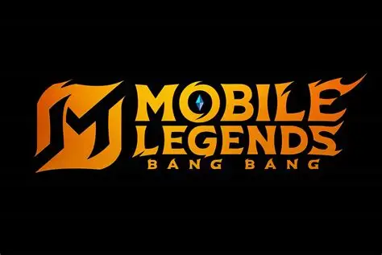
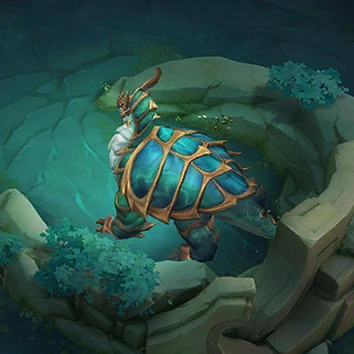
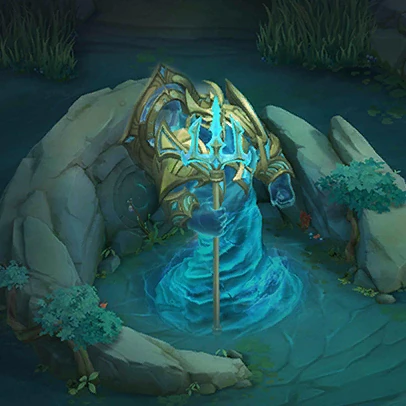

Mobile Legends: Bang Bang
Mobile Legends: Bang Bang (MLBB) is a mobile MOBA inspired by League of Legends. It was originally called Mobile Legends: 5v5 Arena. After a copyright dispute, it became Mobile Legends: Bang Bang.
In this game, two teams of five players try to destroy each other's base.

Main Objectives
These are the objectives I would rank from least to most important:
- Kills: Taking out enemies makes it easier for your team to take objectives. However, kills alone do not win games.
- Gold: Gold helps you buy items. Having more gold than your lane opponent gives you greater carry potential.
- Turrets: You need to break enemy turrets to reach their base. Destroying them also creates space on the map and gives gold.
- Turtle: The first Turtle appears at about 2 minutes, near the EXP lane. The jungler, EXP laner, mid laner, and roamer usually help secure it. The normal Turtle gives team gold and shields. On the Healing Turtle map variant, an allied Turtle helps push the enemy's strongest lane and heals nearby teammates.
- Lord: Lord is the most important late-game objective. It helps push a lane, absorbs turret attacks, and makes it easier to reach the enemy base. Later Lords become stronger and defeating Lord also upgrades your minion waves.
Turtle and Lord


Random Gameplay Tip
Click the button for a tip!
Objective Questions
- Do kills automatically win you the game?
- What does gold help you do?
- Why is Lord so important?
Questions and Answers
| Question | Answer |
|---|---|
| Do kills automatically win you the game? | No. You still need to destroy the enemy base. |
| What does gold help you do? | Buy stronger items and gain an advantage. |
| Why is Lord so important? | It helps your team push turrets and reach the enemy base. |